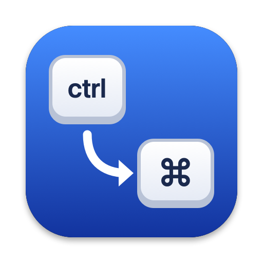

Use Windows & Linux shortcuts on your Mac
KeyBridge is a free, open-source macOS menu bar app. Keep pressing Ctrl+C, Ctrl+V, Ctrl+Z and KeyBridge sends ⌘C, ⌘V, ⌘Z. Your ⌘ shortcuts keep working.
Download for macOS View on GitHubbrew install --cask emajidov/tap/keybridgemacOS 13 Ventura or later · Apple silicon & Intel · Apache 2.0
Why KeyBridge?
Keep your muscle memory
Switch between a Windows or Linux PC and a Mac every day without retraining your fingers.
Doesn't break your Mac
It only adds shortcuts. ⌘ still works, and terminals still get a real Ctrl+C.
Private & offline
No account, no analytics, no network connections. Your keystrokes stay on your Mac.
Fully customizable
Record, edit, disable or reorder any shortcut. Exclude any app with one click, or hide the menu bar icon and let it run in the background.
Default shortcuts
| Windows / Linux | Mac | Action |
|---|---|---|
| Ctrl+C / X / V | ⌘C / X / V | Copy / Cut / Paste |
| Ctrl+A | ⌘A | Select all |
| Ctrl+Z, Ctrl+Y | ⌘Z, ⌘⇧Z | Undo / Redo |
| Ctrl+S, F, N, O, P | ⌘S, F, N, O, P | Save, Find, New, Open, Print |
| Ctrl+T, W, R, L | ⌘T, W, R, L | New tab, Close, Reload, Address bar |
| Ctrl+B / I / U | ⌘B / I / U | Bold / Italic / Underline |
| Ctrl+← / → | ⌥← / → | Jump word |
| Home / End | ⌘← / → | Line start / end |
| Ctrl+Home / End | ⌘↑ / ↓ | Document start / end |
| Ctrl+Backspace / Delete | ⌥⌫ / ⌥⌦ | Delete word |
Hold Shift with navigation shortcuts to select text, just like on Windows.
Install
Option 1: Homebrew (recommended)
If you have Homebrew, run this in Terminal:
brew install --cask emajidov/tap/keybridgeUpdate later with brew upgrade --cask keybridge. Then follow steps 2 and 3 below.
Option 2: Download
- Download
KeyBridge.dmg, open it and drag KeyBridge into Applications. - The app isn't notarized by Apple, so macOS blocks the first launch. Open System Settings → Privacy & Security and click Open Anyway. On macOS 14 and earlier you can also right-click the app and choose Open.
- Allow Accessibility access in System Settings → Privacy & Security → Accessibility.
FAQ
How do I use Ctrl+C and Ctrl+V on a Mac?
Install KeyBridge and grant it Accessibility access. Ctrl+C, Ctrl+V and other Windows shortcuts will then copy, paste and so on, just like on Windows. Your ⌘ shortcuts keep working too.
Will Ctrl+C still stop commands in Terminal?
Yes. Terminal, iTerm2, Warp, Ghostty, kitty, Alacritty, WezTerm, Hyper and Tabby are excluded by default, so Ctrl+C still interrupts running commands.
Does KeyBridge work with virtual machines and remote desktops?
Parallels Desktop, VMware Fusion, UTM and Windows App / Microsoft Remote Desktop are excluded by default, so the guest system receives the real keys.
How do I make Home and End keys work like Windows on a Mac?
KeyBridge maps Home and End to the start and end of the line, and Ctrl+Home / Ctrl+End to the start and end of the document. Hold Shift to select text.
Ctrl+← / → doesn't work. Why?
macOS uses these keys to switch Spaces. Turn them off in System Settings → Keyboard → Keyboard Shortcuts → Mission Control.
Can I install KeyBridge with Homebrew?
Yes. Run brew install --cask emajidov/tap/keybridge in Terminal. Update it with brew upgrade --cask keybridge.
Is KeyBridge free and private?
Yes. KeyBridge is free and open source under the Apache 2.0 license. It works offline, collects no data and makes no network connections.